隐私政策：blueautodoor.github.io/doori-privacy
1. 概述
DOORI 应用可让您用智能手机直接连接自动门控制器（MCU），开关门并查看状态。
- 通信方式 — 在同一 WiFi 网络内直接连接自动门控制器。
- 仅限本地 — 仅在连接到自动门的 WiFi（AP）时才能使用。不支持移动数据或外部网络访问。
- 多语言 — 한국어 · English · 中文 · 日本語。
- 显示 — 主题（深色/浅色/白色）· 字体大小（小/标准/中/大，仅设置界面）· 按钮大小（固定/适应屏幕）。
2. 开始使用
支持环境（兼容设备）
| 类别 | 支持范围 |
|---|---|
| Android | Android 5.1 以上（2015 年之后的大多数设备） |
| iPhone | iOS 13 以上 — iPhone 6s · SE（第一代）到最新机型 |
| iPad | 不支持（仅限 iPhone） |
| 共通 | 能够连接到与自动门控制器相同 WiFi 的设备 |
连接步骤
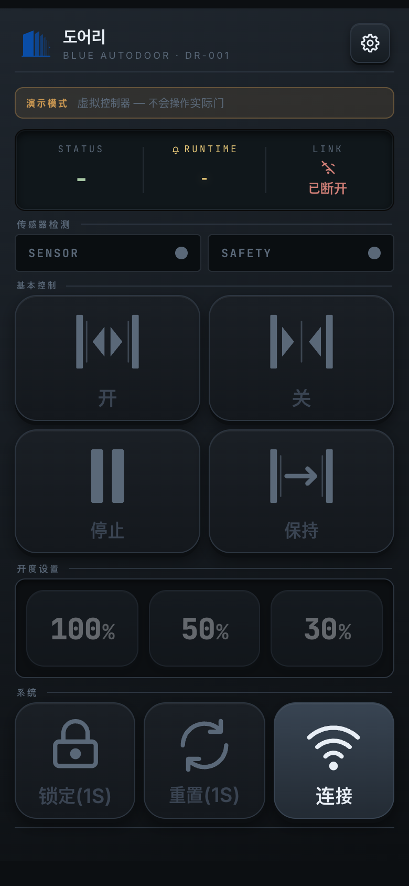
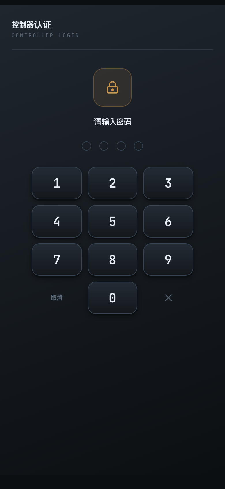
- 将智能手机连接到与自动门控制器相同的 WiFi。自动门会发出自己的 WiFi，请在手机 WiFi 设置中选择该 WiFi 并连接。
- 启动 DOORI 应用。重新启动应用时，启动画面显示约 1.4 秒后进入主屏幕（离线）（不会自动连接）。
- 点击主屏幕右下角系统区域的连接按钮。连接后会出现密码输入（控制器认证）界面。 请输入安装时收到的 4 位密码。认证后即可使用控制功能。
- 如果无法连接，请查看 11. 故障排除；仍未解决时请联系我们。
3. 主屏幕
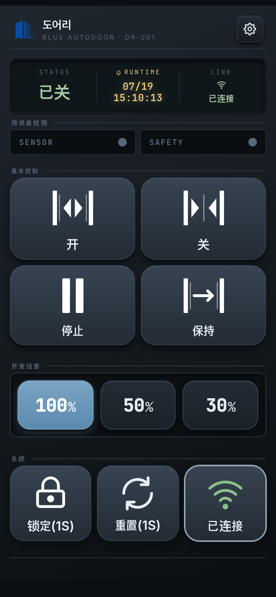
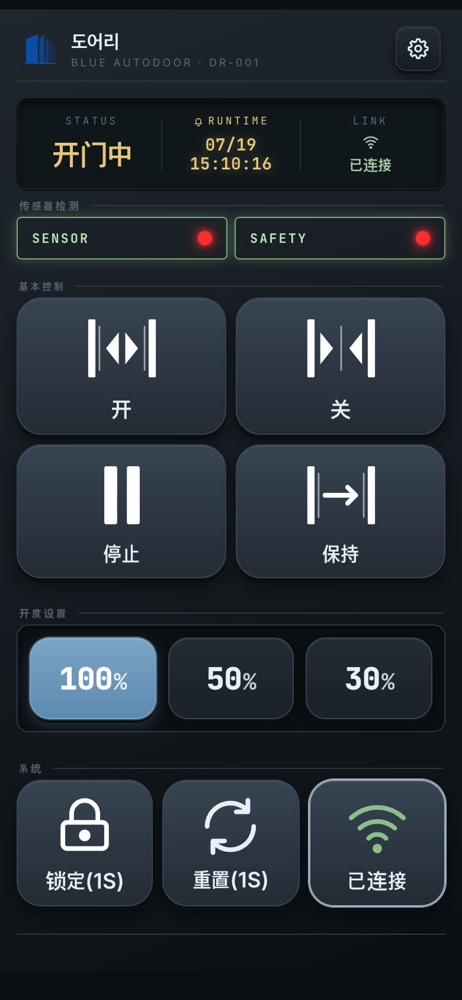
主屏幕的外观随主题而变，但构成和操作方式相同。从上到下依次为以下区域。
3.1 顶部标题栏
左侧为应用图标和名称，点击右侧设置按钮进入设置菜单。
3.2 状态面板（STATUS）
| 项目 | 含义 |
|---|---|
| STATUS | 当前状态 — 开门中 / 关门中 / 已开 / 已关 / 停止 / 错误 / 保持（完全开启保持）/ 锁定。无可显示状态时为 - |
| RUNTIME | 最后一次动作发生的时间（月/日 · 时:分:秒）。无动作记录时为 - |
| LINK | 控制器连接状态 — 已连接（绿色）/ 连接中…（琥珀色）/ 已断开（红色） |
STATUS 颜色区分 — 进行中（开门中/关门中）和停止为黄色，错误和锁定为红色，其他（已开/已关/保持）为绿色。
按下控制按钮、指令实际发送的瞬间，状态面板内的竖向分隔条（STATUS | RUNTIME | LINK 之间的线）会短暂闪烁后消失。 尤其是锁定、重置这类需要长按的按钮，手指会遮挡屏幕而难以判断动作时机，通过这个闪烁可以立即确认"指令已经发出"。 闪烁仅在指令实际发送时出现。
3.3 传感器检测（SENSOR / SAFETY）
- SENSOR — 检测到人或物体后触发开门的传感器。
- SAFETY — 安全传感器，防止关门时夹住（检测中不会关闭）。
检测期间标识会显示红色闪烁。为了不漏掉瞬间的检测，闪烁至少保持约 1 秒。
3.4 基本控制（4 个按钮）
仅在已连接且未锁定时才会启用。
| 按钮 | 动作 |
|---|---|
| 开 | 按设定的开度打开门。 |
| 关 | 关闭门。 |
| 停止 | 让正在动作的门停在当前位置。 |
| 保持 | 完全打开后保持该状态。 |
3.5 开度设置（100 / 50 / 30）
预先选择门要开到什么程度的开度（3 个预设）。点击预设只会传送开度值， 门不会立即动作 — 之后按下开按钮时才会按此开度动作。
3.6 系统（3 个按钮）
| 按钮 | 动作 |
|---|---|
| 锁定 / 解锁 | 为防止误触，需要长按（默认 1 秒）才会执行（按钮上显示为 锁定(1S)）。
锁门后控制按钮会被禁用。 |
| 重置 | 长按（默认 1 秒）向控制器发送重置指令。短按不会执行。 |
| 连接 | 开启和关闭连接。绿色的已连接为正常状态。 |
4. 连接控制器
- 连接 — 应用启动时不会自动连接，需要点击主屏幕的连接按钮。
- 认证 — 每次会话的首次连接需要输入一次密码。认证一次后，同一会话中即使断线重连也不会再次询问。
- 自动重连 — 连接断开时会自动重新连接，并使用之前输入的密码自动重新认证。 密码仅在应用运行期间保存在内存中，不会存储，因此关闭应用后再打开需要重新输入。
- 仅限本地 — WiFi 关闭时会断开连接，WiFi 恢复后会自动重新连接。
连接到自动门 WiFi — 默认在手机 WiFi 设置中手动连接
出厂默认设置下应用不会自动搜索 WiFi。请在手机设置 ▸ WiFi 中连接自动门 WiFi
（名称形如 WizFi360_…），然后点击应用主屏幕的连接。
若未连接到自动门 WiFi 就点击连接，会弹出提示窗口 — 更换手机 WiFi 后点击重试即可。
在应用内自动连接（自动搜索 WiFi — Android 10 以上 · iPhone）
在设置 ▸ 网络设置中开启「自动搜索 WiFi」并输入自动门准确的 WiFi 名称
（例如 WizFi360_123456 — 可在手机 WiFi 列表中确认）后，连接提示窗口中会出现
「连接 (WiFi 名称)」按钮。无需退出到手机 WiFi 设置，可直接在应用内连接。
- 点击「连接 (WiFi 名称)」。
- 手机会询问"要连接到设备吗？" → 点击连接。（仅首次出现，之后手机会记住并直接连接。）
- 连接到自动门 WiFi 后，应用会自动连接到控制器并进入密码界面。
5. 设置菜单
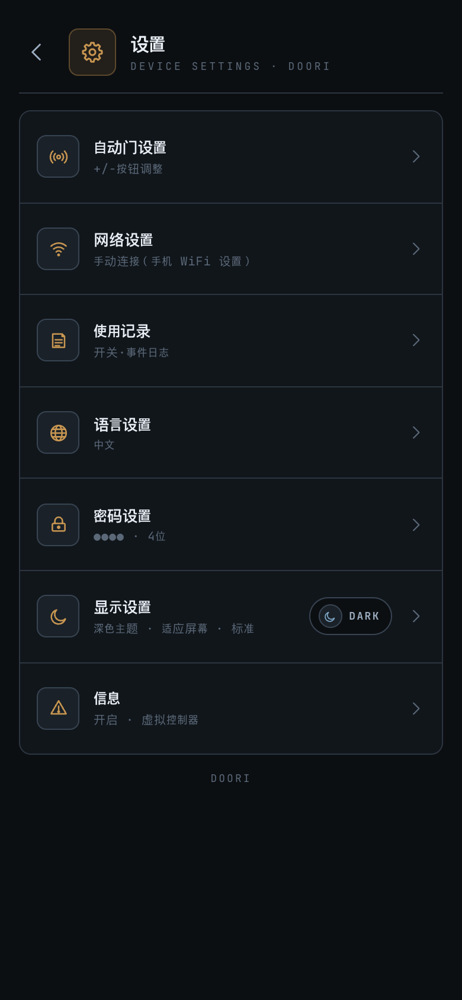
| 项目 | 说明 |
|---|---|
| 自动门设置 | 调整 15 项动作参数 → 第 7 章 |
| 网络设置 | 控制器 WiFi（自动搜索）→ 第 6 章 |
| 使用记录 | 开关·事件日志 → 第 10 章 |
| 语言设置 | 한국어/English/中文/日本語 → 第 9 章 |
| 密码设置 | 更改 4 位密码 → 第 8 章 |
| 显示设置 | 主题 · 字体大小 · 按钮大小 → 第 9 章 |
| 信息 | 型号、固件、序列号等设备信息 |
6. 网络设置
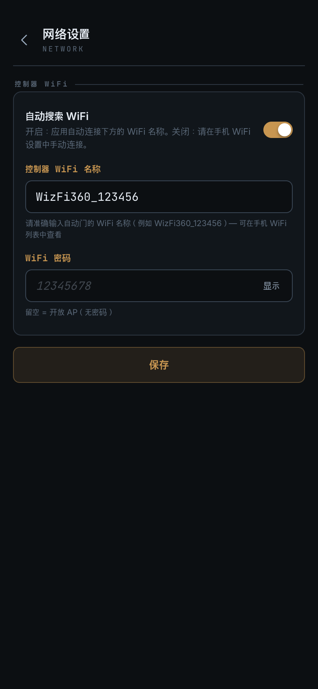
控制器 WiFi
- 自动搜索 WiFi（开关，默认关闭）— 关闭时在手机 WiFi 设置中直接连接（默认）， 开启时应用会尝试用下方输入的 WiFi 名称自动连接。
- 控制器 WiFi 名称 — 自动门 WiFi 的准确名称（例如
WizFi360_123456）。 每台设备的后缀不同，请在手机 WiFi 列表中确认后原样输入。 - WiFi 密码 — 自动门 WiFi 的密码（安装时收到的数值）。
WiFi 信息仅作保存，不会影响当前连接（从下次连接开始生效）。即使周围有多台自动门， 由于指定了准确名称，也只会连接到所输入的那一台。
7. 自动门设置
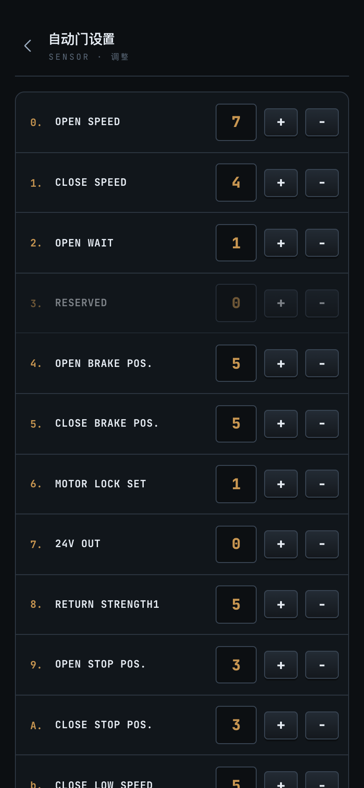
进入后会自动读取控制器当前的 15 项设置。各项目可用 +/− 按钮调整。
| # | 项目 | 含义 | 范围 |
|---|---|---|---|
| 0 | OPEN SPEED | 开门速度 | 0~9 |
| 1 | CLOSE SPEED | 关门速度 | 0~9 |
| 2 | OPEN WAIT | 开启等待时间 | 0~9 |
| 3 | RESERVED | 保留（未使用） | — |
| 4 | OPEN BRAKE POS. | 开门制动位置 | 0~9 |
| 5 | CLOSE BRAKE POS. | 关门制动位置 | 0~9 |
| 6 | MOTOR LOCK SET | 电机锁定 | 0~9 |
| 7 | 24V OUT | 24V 输出 | 0~1 |
| 8 | RETURN STRENGTH1 | 回位力 1 | 0~9 |
| 9 | OPEN STOP POS. | 开门终止位置 | 0~9 |
| A | CLOSE STOP POS. | 关门终止位置 | 0~9 |
| b | CLOSE LOW SPEED | 低速关门 | 0~9 |
| c | RETURN STRENGTH2 | 回位力 2 | 0~9 |
| d | SETTING STRENGTH | 设定力 | 0~9 |
| E | ONE_TOUCH SET | 一键操作 | 0~1 |
底部按钮 — 读取：重新获取当前数值 · 保存：将 15 个数值写入控制器 （需确认控制器的成功响应才算完成）· 默认值：将界面数值恢复为出厂默认值（保存前不会反映到控制器）。
尚未读取到数值的项目会显示为 — 并禁止调整和保存 — 请先执行读取。
保存后若无响应，会弹出"无保存响应"提示，可以重新请求。
8. 密码设置
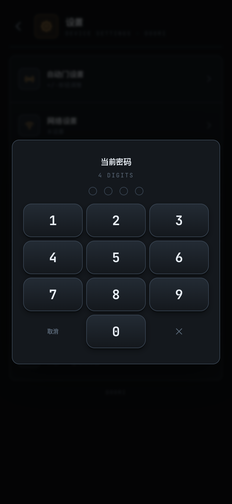
更改步骤（4 位数字）：① 输入当前密码（由控制器验证）→ ② 输入新密码 → ③ 再次输入确认密码。
更改确定后会显示"密码已更改"的提示并返回主屏幕，由于控制器会短暂重启， 屏幕上会出现圆形倒计时。大多数情况下几秒内就会自动重新连接 （使用新密码自动认证 — 无需再次输入）。
9. 语言 · 显示
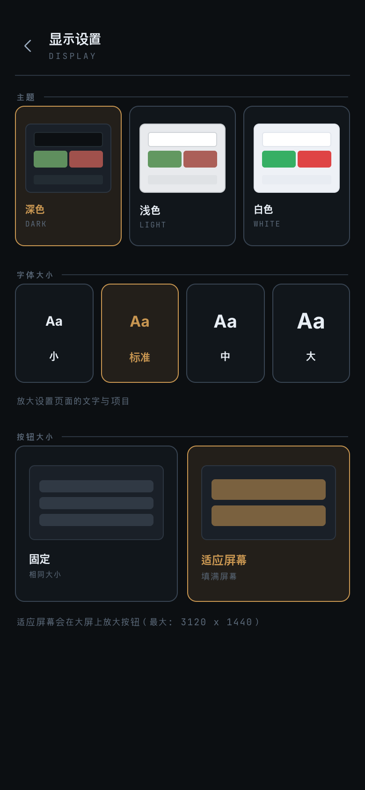
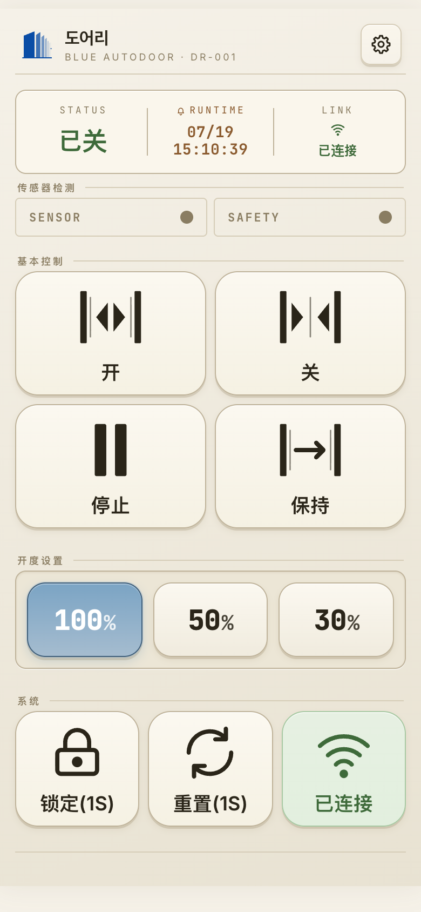
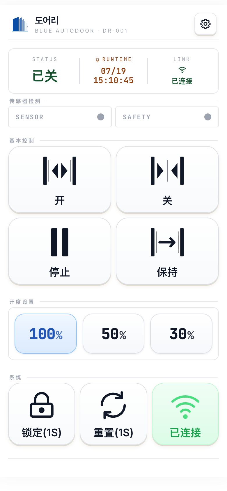
语言设置
设置 → 语言设置 → 从 한국어 / English / 中文 / 日本語 中选择。选择后立即应用到整个界面。 初次安装时会跟随手机（系统）语言，若为不支持的语言则显示英文。一旦手动选择，该选择将被保留。
显示设置（主题 · 字体大小 · 按钮大小）
- 主题 — 深色 / 浅色 / 白色 三种。选择后立即生效。
- 字体大小 — 小/标准/中/大 四档。只放大设置界面的文字，不影响主屏幕。 更改档位也不会导致布局错乱。
- 按钮大小 — 适应屏幕（默认）：按屏幕高度放大主屏幕按钮以填满空白 · 固定：在所有设备上保持相同大小。
10. 使用记录
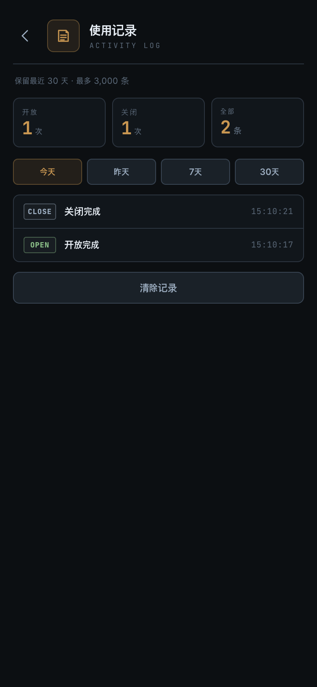
在设置 → 使用记录中查看门的动作历史。显示对象：开启/关闭完成 · 停止 · 错误等门动作， 以及锁定 / 解锁 / 重置记录。
- 期间筛选：今天 / 昨天 / 7 天 / 30 天 · 顶部显示开门和关门次数统计。
- 保存：最近 30 天 + 最多 3,000 条（超出部分自动删除）。可用清除记录全部删除。
11. 故障排除
| 症状 | 确认事项 |
|---|---|
| 无法连接 | 请确认智能手机与控制器处于相同 WiFi 后重试。 如果仍然不行，请联系安装公司或我们。 |
| 仅 iPhone 无法连接 | 可能是 iOS 本地网络权限被关闭。 请在设置应用 ▸ DOORI ▸ 本地网络中开启后重新连接。 |
| 频繁断线 | 请检查 WiFi 信号强度和与控制器的距离。信号良好但仍持续断线时请联系我们。 |
| 控制按钮呈灰色（禁用） | 处于未连接或锁定状态。 |
| 无法进入自动门设置 | 必须已连接控制器才能进入。 |
设置值只显示 — | 尚未读取。请点击读取。 |
| 无法更改密码 | 密码保存在控制器中 — 只能在已连接状态下更改。 |
| 想用移动数据连接 | 不支持。请连接到自动门的 WiFi（AP）后使用。 |
| 看不到自动门 WiFi 连接按钮 | 应用内自动连接需要开启「自动搜索 WiFi」才会出现 （设置 ▸ 网络设置，Android 10 以上 · iPhone）。否则请在手机 WiFi 设置中直接连接。 |
| 使用 DOORI 期间无法上网 | 这是正常的 — 连接期间手机 WiFi 会切换到没有互联网的自动门 WiFi。 关闭应用或断开连接后会恢复原来的 WiFi。 |
| 自动连接时提示"找不到 WiFi" | 请确认设置 ▸ 网络设置中的控制器 WiFi 名称 与实际名称完全一致（可在手机 WiFi 列表中确认），以及 WiFi 密码是否正确。 |
| 离开一段时间回来后连接没有恢复 | 这是正常的。请参考下方 「连接未自动恢复时」，点击主屏幕的连接按钮。 |
| 用过其他 WiFi 后回来无法连接 | 请将手机切回自动门 WiFi 后点击主屏幕的连接。 |
连接未自动恢复时 — 手动重连
DOORI 只能在自动门 WiFi 内工作。因此当手机离开该 WiFi 时，应用会
为了节省电量而暂停自动重连。这不是故障，而是既定的行为。
此时 LINK 栏会显示已断开，控制按钮会变灰锁定。
| 情况 | 应用的行为 |
|---|---|
| 远离门而离开自动门 WiFi | 尝试几次后静默停止 |
| 切换到手机数据（LTE·5G） | 同样会停止（数据流量无法访问自动门） |
| 切换到其他 WiFi（家庭·办公室等） | 再尝试一会儿后停止 |
| 重新回到自动门 WiFi | 自动重新连接 |
| 信号弱导致短暂断线 | 自动尝试重连几次 |
解决方法 — 两个步骤即可。
- 请确认手机是否已连接到自动门 WiFi。
- 点击主屏幕右下角的
连接按钮。点击此按钮后应用会从头开始重新连接 — 这是即使自动重连已停止也始终有效、最可靠的方法。
连接 按钮。
这比等待应用自行重连要快得多。12. 常见问题
- Q. 可以用多部手机同时控制吗？
- 可以。多部手机各自连接并认证后即可一起使用。但如果多部手机同时发送指令， 正在执行的指令会优先，部分指令可能被忽略，看起来与预期不同，因此建议操作门时一次只用一部手机。
- Q. 忘记密码了。
- 密码保存在控制器（MCU）中。需要重置控制器或联系安装公司。
- Q. 除了开度 100/50/30 之外不能设置其他数值吗？
- 主屏幕仅提供 100/50/30 三个预设（没有滑块）。
- Q. 离开一会儿回来发现连接断开了，是故障吗？
- 不是。手机离开自动门 WiFi 后，应用会为了节省电量而停止自动重连。 请重新连接到自动门 WiFi 后点击主屏幕的连接按钮。
- Q. 开着应用走到门前会自动连接吗？
- 如果一直连接着自动门 WiFi，通常会自动重新连接。但如果中途切换到了其他 WiFi 或手机数据，
则需要手动点击
连接按钮。 - Q. 能从互联网（外部）打开家里的自动门吗？
- 不支持。DOORI 只能在与自动门相同的 WiFi（AP）内连接。远程控制涉及安全问题， 由单独的产品方案处理。
- Q. 应用会收集个人信息吗？
- 不会。没有账号、登录和注册，也不与外部服务器通信。 详情请参阅隐私政策。